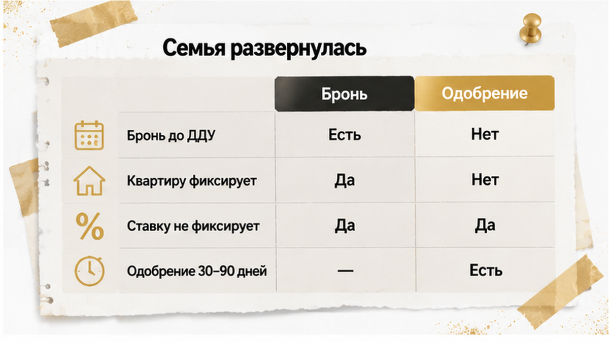
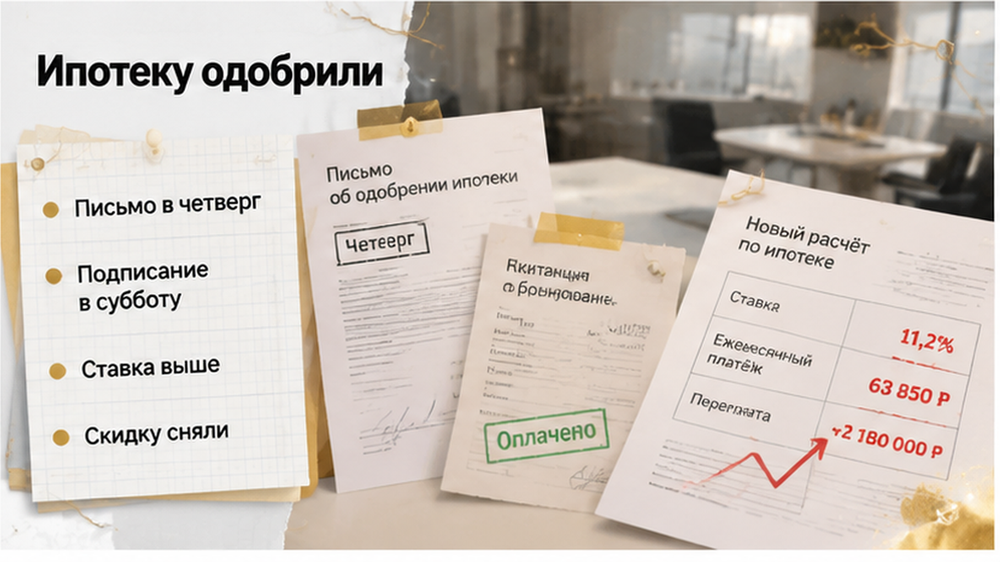
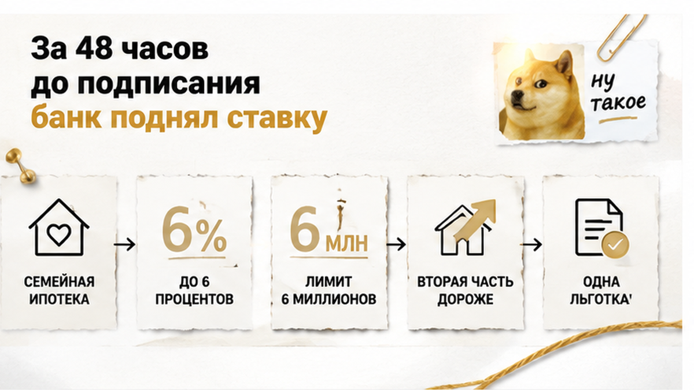
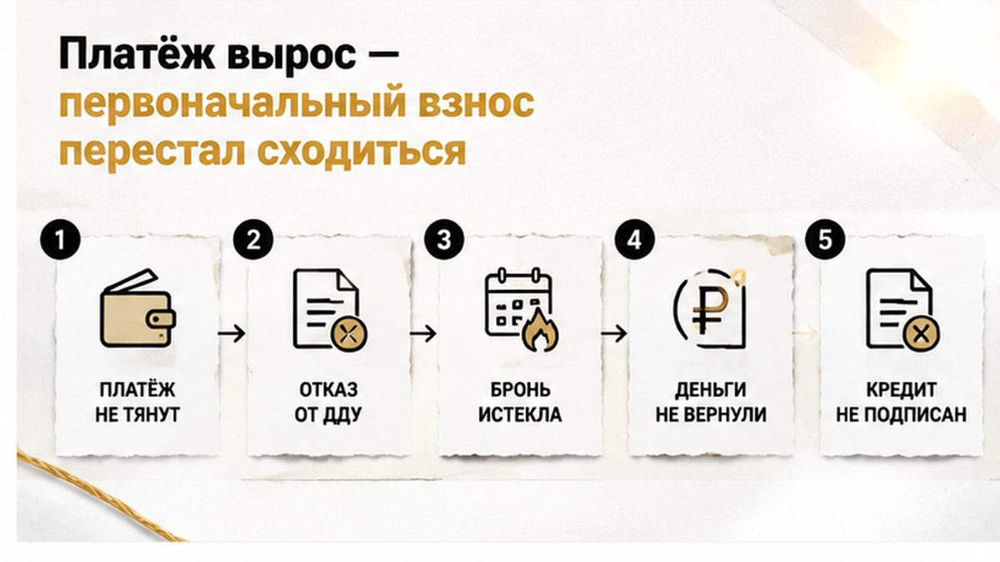
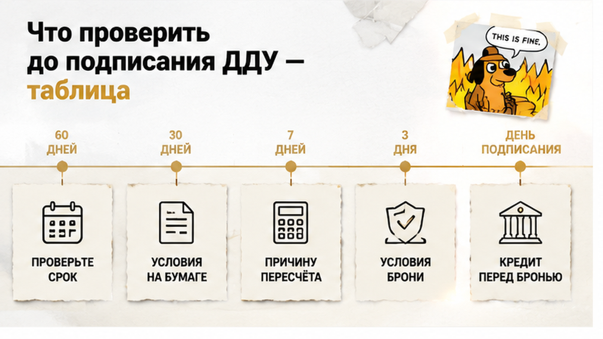

За двое суток до подписания ДДУ банк прислал семье новый расчёт: ставка выше, скидка снята, платёж — плюс 15–20 тысяч рублей в месяц, и бронь на квартиру в новостройке сгорела. Одобрение лежало у них на руках несколько недель, платёж был вписан в бюджет между садиком и продуктами, взнос собран до рубля. Письмо пришло в четверг вечером, подписание стояло на субботнее утро. Утром они сели на кухне с калькулятором и увидели, что новая цифра не сходится ни с доходом, ни с накопленным взносом. ДДУ семья подписывать не стала — бронь дотикала до своей даты, квартира вернулась в продажу, деньги за бронирование не вернулись: так был написан договор.
Я Святослав Шакин, The Риэлтор, Тюмень — веду сделки по новостройкам и такие развороты на финише вижу каждый месяц. Если вы сейчас между одобрением и подписанием ДДУ, напишите до того, как внесёте деньги: Telegram или MAX.
Начиналось всё спокойно. Семья с детьми выбрала квартиру в новостройке на севере Тюмени, съездила на площадку, посчитала метры и дорогу до школы, внесла плату за бронь. Через несколько дней пришло предварительное одобрение ипотеки: ставка, ежемесячный платёж, размер первоначального взноса — эти три цифры они и разложили по семейному бюджету.
А дальше щёлкнуло то, что щёлкает почти у всех: ипотеку одобрили — значит, сделка есть, осталось доехать до подписания. В этом щелчке и выросла потеря брони. Скажу простым русским, без банковского языка: предварительное одобрение — не обещание и не договор. Банк посмотрел ваш доход и сказал: «скорее всего дадим примерно столько и примерно под такой процент». Пока кредитный договор не подписан, он вправе пересмотреть ставку, скидку за страхование, максимальную сумму, требуемый взнос и даже срок жизни самого одобрения. Одобрение семье даже не отзывали — просто пересчитали, и этого хватило: одобрение действует, бронь оплачена, кредитного договора нет.
Про вилку «плюс 15–20 тысяч» оговорюсь сразу: это модельный диапазон конкретного расчёта, а не средняя цифра по городу. Дело не в тысячах, а в том, где прилетает пересчёт: на самом узком участке, когда бронь оплачена, застройщик держит время в графике, а отступать вроде бы уже некуда. Похожий финиш я разбирал в истории, где ипотеку одобрили, а регистрацию отменили из-за строки в ЕГРН: деньги вопрос закрывают, сделку — нет.

Покупка новостройки — не одно действие, а цепочка: бронь, предварительное одобрение, проверка банком объекта и застройщика, согласование условий кредита, подписание и регистрация ДДУ, открытие эскроу и только потом выдача денег. Между первым и последним пунктом легко проходят недели.
Всё это время бронь тикает. Ставка — нет. Бронь фиксирует за вами квартиру и часто цену у застройщика, а ипотечную ставку не фиксирует никак: эти деньги уходят застройщику или агенту, не в банк и не на эскроу, откуда вернулись бы при расторжении. Ставку фиксирует только подписанный кредитный договор. И срок одобрения конечный — обычно 30–90 дней, иногда до 120; если согласование уползает к концу этого срока, банк смотрит заявку заново: новый доход, новая долговая нагрузка, новая политика по ставкам.
Фон 2026 года риск усиливает. Ключевая ставка ЦБ держится на 14% с 27 июля, следующее заседание — 11 сентября, и банки заранее двигают витрины под ожидания. По обзору Sravni.ru от 28 августа средневзвешенная ставка по новостройкам среди пятнадцати банков была 18,74%, разброс предложений — от 15,90% до 19,45%; часть банков после решения ЦБ ставку не снизила, а отдельные подняли (в обзоре упоминается рост на 1 процентный пункт у ДОМ.РФ). Это агрегированные данные обзора, а не тариф конкретного банка — свою цифру вы увидите только в своих документах.
Добавьте местный слой. В Тюменской области новостройки берут в основном по льготным программам — по данным 72.ru со ссылкой на «Этажи», доля таких сделок в отдельные волны доходила до 82,8%. Объём ипотеки в регионе без автономных округов за январь–апрель 2026 года — 21 млрд рублей, плюс 50% год к году (tumentoday.ru). Плюс ожидание изменений с 1 октября, из-за которого август и сентябрь шли на повышенном спросе. Когда очередь на согласование плотная, а программа вот-вот меняется, дни между одобрением и ДДУ становятся самым дорогим отрезком сделки — это видно и в разборе, где семейную ипотеку на новостройку одобрили, а эскроу так и не открыли.

Письмо от банка пришло в четверг вечером. Подписание ДДУ у застройщика стояло на субботнее утро. Ни отказа, ни отзыва одобрения в письме не было — были другие цифры: ставка выше той, что месяц лежала у семьи в расчёте, скидка снята, льготная часть пересчитана. Менеджер по телефону сказал бодро: «Заявка живая, приходите подписывать». У застройщика время в графике держали: пакет собран, эскроу готовы открывать сразу после регистрации.
Обычный покупатель в этот момент думает, что банк передумал лично про него. Расскажу изнутри: банк не передумал — он просто никогда и не обещал. Предварительное одобрение читается как обещание, но им не является: пока кредитный договор не подписан, у вас на руках расчёт, а не ставка. Это преддоговорный этап, и на нём банк вправе пересмотреть условия по своей политике — это не нарушение и не история «обманули конкретную семью». Одностороннее повышение ставки по уже подписанному договору — другой правовой режим и другие ограничения для банка.
До подписания кредитного договора двигаться может сразу несколько параметров:
Причины пересчёта почти никогда не персональные — тот же рыночный фон плюс повторная проверка дохода, долговой нагрузки и объекта перед выдачей. Пересчёт прилетает за сутки-двое до подписи.
Про бронь скажу отдельно — тут иллюзия самая стойкая. Плата за бронирование держит за вами квартиру и иногда цену. Ставку она не держит вообще: эти деньги уходят застройщику или агенту, не в банк и не на эскроу. Бронь даёт время на согласование — и всё это время работает против вас.

Арифметика простая и потому неприятная: та же сумма кредита, ставка выше — платёж выше. В этом кейсе он поднялся примерно на 15–20 тысяч рублей в месяц; это модельная вилка конкретного расчёта, а не средняя цифра по Тюмени — при другой сумме и другом сроке разница будет своя. Бюджет у семьи был собран под старый платёж: садик, кредит на машину, отпускные накопления, из которых как раз и складывали взнос. Двадцать тысяч в месяц на горизонте двадцати лет — это не «немного потерпеть», это другая жизнь.
Вторая половина проблемы была жёстче первой. При пересчёте банк может не только поднять ставку, но и одновременно урезать максимальную сумму кредита. Тогда, чтобы взять ту же квартиру, нужно доложить разницу своими деньгами или искать объект дешевле. Свободных денег у семьи не осталось: всё лежало во взносе и в оплаченной броне. Ещё банк смотрит на долговую нагрузку — простым русским, какая доля дохода уходит на все платежи вместе. По материалу «Тюменской области сегодня» со ссылкой на ЦБ уровень выше 50% считается рискованным, выше 80% — очень рискованным. Это не автоматический отказ, но при новой ставке нагрузка растёт, и внутренние лимиты банка начинают работать против вас.
Оставалась надежда на льготную программу. Семейная ипотека — ставка до 6%, взнос от 20% и лимит до 6 млн рублей для регионов вне Москвы и Санкт-Петербурга. Если квартира дороже лимита, включается комбинированная схема: льготная часть до 6 млн под 6%, остаток — по рыночной ставке в том же договоре. Поэтому итоговый платёж нельзя оценивать по красивой цифре 6%: рыночная половина в 2026 году ведёт себя так же нервно, как весь рынок. Плюс с 1 февраля 2026 года работает правило «одна семья — одна льготная ипотека» — отыграться вторым льготным кредитом позже не получится.
Вариантов было три, и семья честно перебрала все. Доложить взнос — нечем. Взять квартиру дешевле — бронь оплачена за конкретную планировку, а переносить её на другой объект застройщик готов не всегда. Уйти в другой банк — реально, но это новая заявка, новая проверка дохода и объекта, а значит недели; бронь заканчивалась раньше, чем пришли бы финальные условия. Похожий тупик я разбирал в истории, где банк остановил сделку уже на финише, перед ДДУ и открытием эскроу: этап другой, логика та же — пока подписи нет, сделки нет.
И местный слой, который в такие дни давит сильнее всего. В Тюменской области новостройки покупают в основном по льготке: по данным 72.ru со ссылкой на «Этажи», доля льготных сделок в отдельные волны доходила до 82,8%. Изменения программы в области отложены до 1 октября 2026 года, то есть окно на повторное одобрение формально было — но недели, не месяцы. В пятницу вечером у семьи на руках лежали новый платёж, старый бюджет и сутки до подписания.

Решение приняли дома, за столом, где ещё лежала распечатка старого расчёта. Считали одну простую вещь: потянут ли новый платёж двенадцать месяцев подряд, если у мужа сорвётся премия или жена уйдёт на больничный с младшим. Плюс 15–20 тысяч в месяц — вилка их конкретного расчёта, — но на горизонте двадцати лет это не «немного потерпеть», а другая жизнь: без запаса, без отпуска, с оглядкой на календарь. Утром позвонили менеджеру застройщика: «На новых условиях подписывать не будем». В трубке было понимание пополам с уговором: квартира хорошая, ставку потом рефинансируете. Они подумали ещё сутки и не изменили решения.
Дальше всё случилось буднично. Срок брони истёк в свою дату, квартиру вернули в продажу, через несколько дней её купили другие — по цене, которая уже подросла. Плата за бронирование не вернулась: по договору это была оплата услуги, а не аванс в счёт цены, и пересмотр банком условий не значился среди оснований для возврата. Частичный возврат встречается — но зависит он не от справедливости ситуации, а от того, что подписано до внесения денег.
Теперь важное: что семья при этом не потеряла. Кредитный договор не подписан — долга по новой ставке нет. ДДУ не зарегистрирован — обязательств перед застройщиком нет. Деньги на эскроу не ушли. Разница принципиальная: когда деньги уже лежат на счёте, а ключи от новостройки переносят на год, выйти из сделки на порядок сложнее. Здесь цена разворота — деньги за бронь и полтора месяца. Не двадцать лет платежа, который не тянешь.
Второй круг пришлось начинать с нуля: новая заявка, новый пакет, новое одобрение, новый поиск. Для тюменских семей тут отдельный нюанс со сроками: с 1 февраля 2026 года работает правило «одна семья — одна льготная ипотека», но в Тюменской области изменения отложены до 1 октября 2026 года. Для повторного одобрения после сорвавшейся сделки это не дата из новостей, а рамка, в которую надо успеть.
Банк поднял ставку накануне ДДУ — вы бы подписали договор на новых условиях, чтобы не потерять квартиру, или развернулись, даже если бронь сгорит? Напишите в комментариях: интересно, где у людей проходит граница между «переплачу, но заеду» и «лучше подожду».

Почти каждый пункт ниже закрывается одним письмом или одним вопросом менеджеру — но заданным до того, как вы внесли деньги за бронь.
| Что проверяем | Кому задаём вопрос | Что должно быть на бумаге | Тревожный ответ |
|---|---|---|---|
| Срок действия одобрения | Банк, кредитный менеджер | Дата окончания одобрения (обычно 30–90 дней, иногда до 120) | «Ориентировочно пару месяцев», без даты |
| Финальные условия кредита | Банк | Ставка, сумма, платёж, взнос — в проекте кредитного договора | «Всё уточним в день сделки» |
| Основание пересчёта | Банк | Письменное уведомление: новая ставка, новый платёж, причина | Только звонок и слова менеджера |
| Скидка за страхование | Банк | Условия сохранения скидки и что её снимает | Ставка «с учётом скидки» без расшифровки |
| Долговая нагрузка (ПДН) | Банк | Новый расчёт с учётом всех кредитов и карт | Отказ показывать расчёт до заявки |
| Условия брони | Застройщик, агент | Срок, размер, аванс это или услуга, основания возврата | «Бронь невозвратная, это стандарт» |
| Продление брони | Застройщик | Письменное подтверждение новой даты | Устное «продлим, если что» |
| Льготная программа | Банк + застройщик | Соответствие требованиям и дедлайн 1 октября 2026 года | «У вас точно пройдёт, не переживайте» |
Порядок один: сначала финальные условия кредита на бумаге, потом деньги за бронь, потом подписание ДДУ. Если условия ещё висят на словах, спешить с ДДУ смысла нет: сделку способны остановить буквально на финише. И один практический ход: пока идёт согласование, держите расчёт параллельно в двух-трёх банках. На одно и то же решение банки реагируют по-разному: один витрину не трогает, другой поднимает. Запасной вариант экономит не проценты, а срок брони.
Если вы сейчас на этапе «одобрили, бронируем» — напишите до того, как внесёте деньги. Посмотрим договор бронирования и условия банка вместе: Telegram или MAX.
Вывод здесь не про страх. Новостройки в Тюмени спокойно покупают — и семьи с детьми, и те, кто берёт первую квартиру. Просто деньги за бронь вносятся тогда, когда вы понимаете, из чего складывается ваш платёж, а не когда «квартиру вот-вот заберут». Эта семья потеряла бронь и полтора месяца. Зато не влезла в платёж, который не тянет, и не отправила деньги на эскроу под условия, которых не видела. Второй круг они прошли спокойнее: сначала бумага с цифрами, потом подпись. Если вы сейчас между одобрением и ДДУ — у вас в руках ровно та же ручка. Нажмите паузу и попросите бумагу.